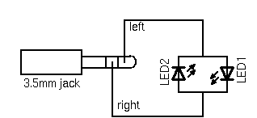
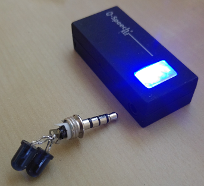

It is possible to IR signals via the audio port. It does this by modulating the data onto a sine which is half the carrier frequency (38 kHz is the default if the remote doesn't have a frequency specified). After rectification the sine becomes a full frequency carrier. The wave is inverted on the right channel, so the left and right channels can be used to double the voltage.
Source: http://www.lirc.org/html/audio.htmlDepending on the voltage power of your phone you might need to build an active (with battery) or passive IR blaster. I recommend to get IR-LEDs with the lowest Uf voltage possible and test with an 1.2V power source (e.g. 1.2V rechargable battery) if they are bright enough.
Warning: Please try to check the wiring multiple times before attaching this to a smartphone. Shorting and/or overloading may damage the phone's audio jack. Also I'm not responsible for any damaged caused by using this method. Try at your own risk.
I have tested with a passive blaster with a very simple circuit. 2 IR-LEDs connected with each other.
The diagram is an adapted version of the lirc.org diagram with the resistance removed.

This is a photo of my solution using a 'B-Speech Rx2' Bluetooth Stereo receiver. I can position this device with the self-made blaster connected near the devices i want to control and be able to send IR commands even without direct line of sight from the phone. Actually this is even better than using the integrated IR-blaster!
Note: This can work with almost any Stereo A2DP Bluetooth Stereo receiver, but it needs to have a high voltage / peak out.

I have ported this method to Android and starting with irplus 1.6.0 you can use the Audio-Port or a Bluetooth A2DP Stereo receiver (Mono will probably not work due to low voltage) to send IR-codes on any phone.
To enable this feature select "Audio Infrared Encoder" from the App's settings, and make sure the Volume rocker for Media is at 100%. If you want to use Bluetooth/A2DP make sure you are connected to the stereo receiver.